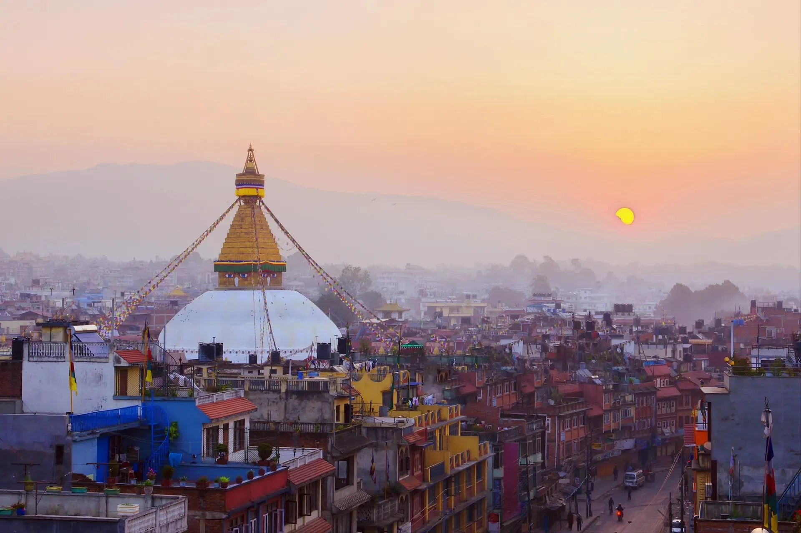

Kathmandu is a beautiful city full of bustling environments and large mountainsides such as the Himalayas. It is also full of rich history, large temples, and a bustling community; it makes sense that it’s the capital of Nepal. Kathmandu is known for combining its rich historical history with the latest technology. Plan your next visit to see the Garden of Dreams, Kirtipur, or the large Durbar Square.
